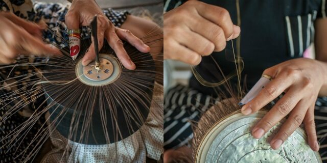
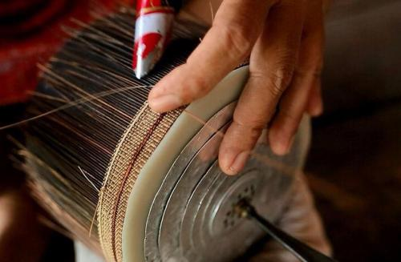
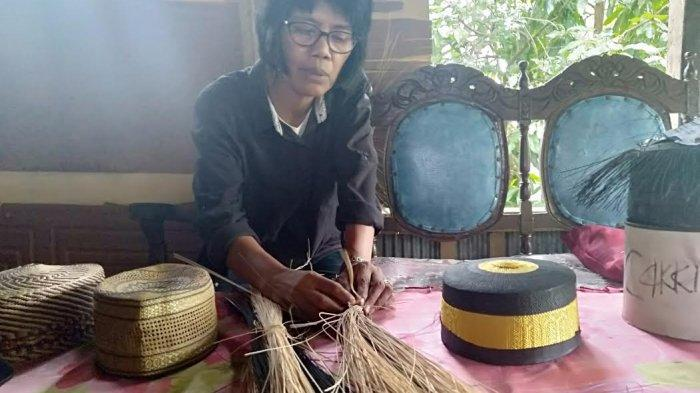

Songkok Recca, Simbol Jati Diri Cendekiawan dan Bangsawan Bone Songkok recca atau yang juga dikenal dengan songkok Bugis bukan hanya sekadar penutup kepala. Songkok ini menjadi identitas atau jati diri bagi para cendekiawan dan bangsawan kerajaan Bone. Dahulu pemakainya bukan orang sembarangan. Konon, bila dipakai maka kharisma pemakainya akan semakin terpancar.
READ MORE
Songkok Recca, Simbol Jati Diri Cendekiawan dan Bangsawan Bone Songkok recca atau yang juga dikenal dengan songkok Bugis bukan hanya sekadar penutup kepala. Songkok ini menjadi identitas atau jati diri bagi para cendekiawan dan bangsawan kerajaan Bone. Dahulu pemakainya bukan orang sembarangan. Konon, bila dipakai maka kharisma pemakainya akan semakin terpancar.
Read More
Songkok Recca, Simbol Jati Diri Cendekiawan dan Bangsawan Bone Songkok recca atau yang juga dikenal dengan songkok Bugis bukan hanya sekadar penutup kepala. Songkok ini menjadi identitas atau jati diri bagi para cendekiawan dan bangsawan kerajaan Bone. Dahulu pemakainya bukan orang sembarangan. Konon, bila dipakai maka kharisma pemakainya akan semakin terpancar.
Read MorePesatnya perkembangan zaman, terjadi perubahan pola pikir masyarakatn. Kaum dunia tidak lagi memandang drajat perbedaan kasta, yang sudah tidak berlaku lagi untuk masyarakat modern dan semua golongan bisa memakai songkok Recca. Namun magis dari songkok ini seolah tak pernah padam saat dipakai. Keistimewaan songkok ini akan terlihat jika dipakai di atas kepala tokoh-tokoh penting, pejabat, bangsawan, dan elit-elit lainnya. Kharisma pemakainya akan terlihat.

Membuat songkok ini menjadi amat sangat dihargai. Pada masa pemerintahan Raja Bone Ke-32 Lamappanyukki tahun 1931 songko recca’ menjadi semacam kopiah resmi atau songkok kebesaran bagi raja, bangsawan, dan para ponggawa-pongawa kerajaan.
Untuk membedakan tingkat kederajatan di antara mereka, maka songko’ recca dibuat dengan pinggiran emas (pamiring pulaweng) yang menunjukkan strata pemakainya. Salah satu sebab terbuatnya songkok ini pada waktu itu raja bone ingin berperang melawan toraja, pada waktu itu raja menginginkan sebuah identitas bagi masyarakatnya sebagai tanda pengenal.
Tercatat dalam sejarah, berawal ketika Raja Bone ke XV Laterintatta Arung Palakka melakukan ekspansi ke Tana Toraja pada tahun 1683 masehi untuk memperluas kekuasaan Kerajaan Bone. Dalam penyerangan itu pasukan Arung Palakka berhasil menduduki wilayah Makale, dan Rantepao.
Di Kabupaten Bone, terdapat songkok yang dulunya hanya boleh dipakai oleh darah biru saja. Kabupaten yang terdapat di Awangpone, Sulawesi Selatan itu, memiliki songkok yang bernama recca. Konon katanya, dengan songkok ini kharisma pemakainya akan terlihat. Namun seiring berjalannya waktu, semua golongan bisa mengenakan songkok peninggalan raja ini.
© Copyright 2019 All Right Reserved By Free html Templates